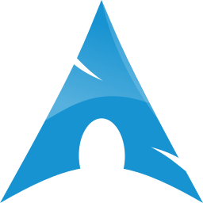

🔎 Search by name
Find a podcast quickly by title and let PodFetch resolve its feed automatically.
Rust CLI • Podcast Syncing
PodFetch helps you find podcasts, resolve their RSS feeds, and download new episodes from the terminal with metadata and cover art baked in.
Pull podcasts into a structured folder, tag the audio for your media stack, and skip already-downloaded episodes.
podfetch "Darknet Diaries"
podfetch https://example.com/podcast.xmlWhat PodFetch does
Built around the real workflow of podcast fans who want something simple and dependable from the terminal.
Find a podcast quickly by title and let PodFetch resolve its feed automatically.
Use either a podcast name or a known RSS feed URL, depending on what you already have.
Only downloads episodes that have not already been recorded, keeping repeat runs lightweight.
Tags downloaded files and writes metadata and cover images for media-server workflows.
Use templates like {podcast_name} and {podcast_author} to build your preferred folder layout.
Increase throughput with configurable concurrency for a faster sync pass when you want it.
Install it your way
Install from crates.io on any Rust-enabled system.
cargo install podfetch

Install PodFetch on Arch Linux with package-manager support.
yay -S podfetch
Run a self-contained binary on Linux desktops without extra setup.
./podfetch-*.AppImage
Use the cross-compiled Windows build from the release artifacts.
podfetch.exe
Quick start
Use a podcast title to search and resolve the feed automatically.
podfetch "Darknet Diaries"Point PodFetch at a feed URL when you already know the source.
podfetch https://example.com/podcast.xmlUse --search when you want the input treated strictly as a search term.
podfetch --search "The Joe Rogan Experience"Use -o with placeholders like {podcast_name} or {podcast_author} to customize where files land.
podfetch -o "~/Music/podcasts/{podcast_name}" "My Podcast"